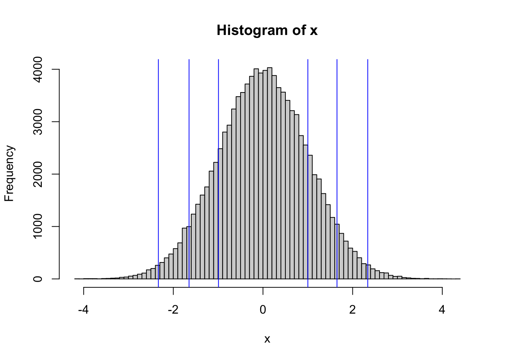
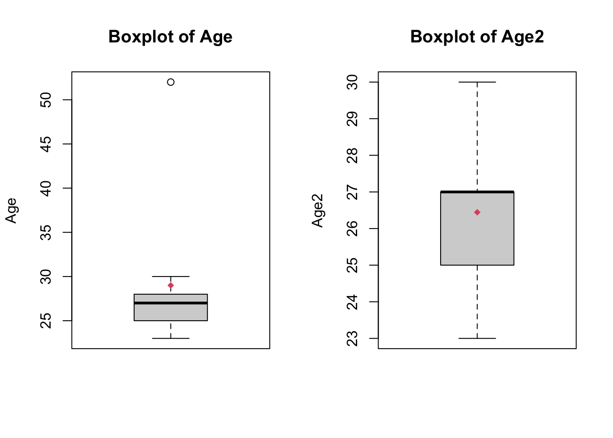
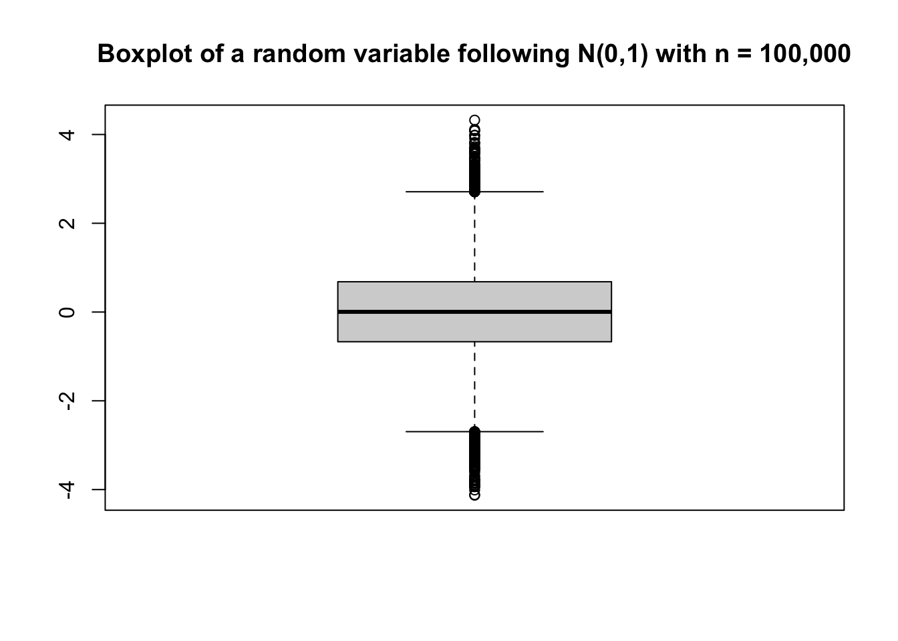
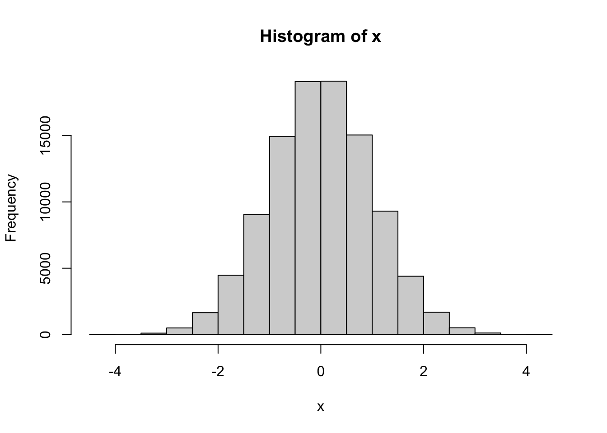
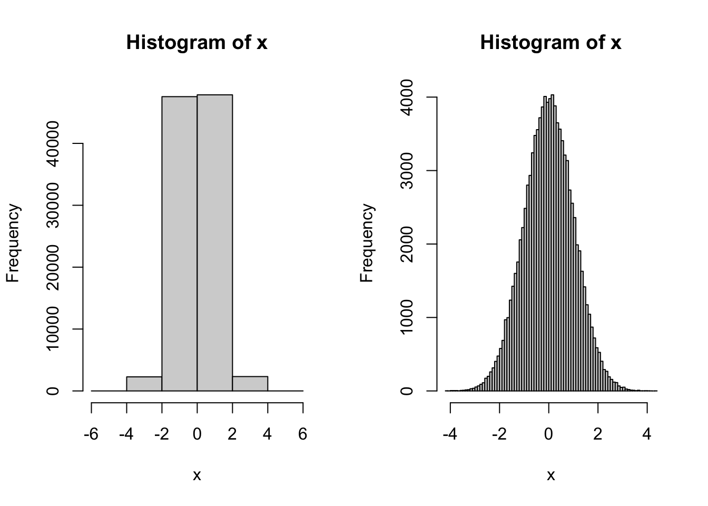
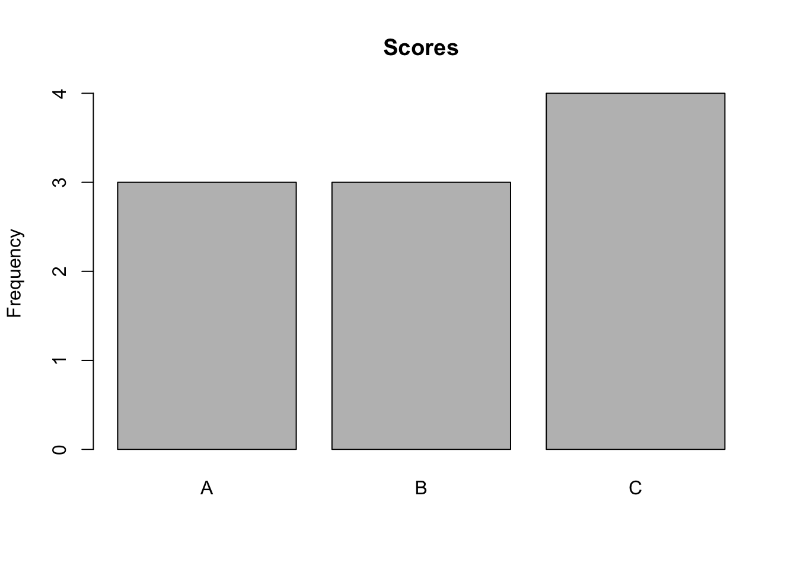
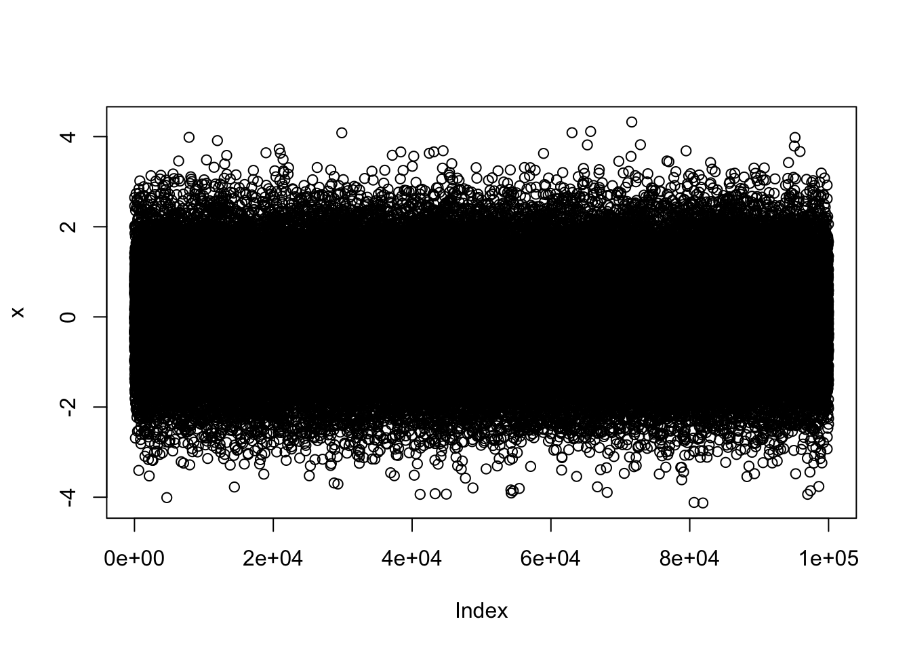

Age <- c (25, 27, 28, 23, 52, 27, 27, 26, 25, 30)11 Univariate statistics
Univariate analysis seeks to summarize a single variable or characteristic, such as the distribution of wages in a city or the number of commuters in each regions of a country.
We usually describe a variable using a general, average value, which is think is representative of the sample or of the population - we call it a measure of center - to which we add a notion of how spread the values are around that general/average/central value, we call a measure of dispersion. For both, there different possibilities, depending on the distribution of values and on the type of data.
11.1 Measures of Center
11.1.1 Mean
The arithmetic mean of a vector x having n observations: x = (x1, x2,… , xi, …, xn) is given by the following formulae for the empirical and theoretical means:
\[\bar{x} = \dfrac{1}{n} \sum_{i=1}^n x_i\] \[\mu_X = E(X) = \dfrac{1}{N} \sum_{i=1}^N X_i\]
with \(n\) the size of the sample and \(N\) the size of the population.
Let’s take a variable with the ages of some individuals:
The empirical mean of this variable is given by:
\((1 / 10) * (25 + 27 + 28 + 23 + 52 + 27 + 27 + 26 + 25 + 30) = 290 / 10 = 29\)
You can compute the mean of a vector as follows in R:
sum(Age) / length(Age)
#> [1] 29
mean(Age)
#> [1] 29But in some cases, the mean is not a good indicator of the central value of a distribution. For the above variable, we can see that one individual is 52 years old. The mean is sensitive to extreme values or outliers.
11.1.2 Median
The median corresponds to the value such that 50% of the individuals have a smaller or equal value and 50% of the individuals have a larger or equal value. It is also called the 50th percentile. We consider the variable Age and a second variable Age2 where the value 52 has been removed. They have respectively 10 and 9 elements.
Age2 <- c (25, 27, 28, 23, 27, 27, 26, 25, 30)First, sort the values of the vector considered from the smallest to the largest. For Age: \({23, 25, 25, 26, 27, 27, 27, 28, 30, 52}\)
and for Age2:
\({23, 25, 25, 26, 27, 27, 27, 28, 30}\)
We know already how to do this in R:
sort(Age)
#> [1] 23 25 25 26 27 27 27 28 30 52
sort(Age2)
#> [1] 23 25 25 26 27 27 27 28 30Second,
- For an odd set of numbers (Age2), find the number in the middle of the vector, this is the empirical median. The number to take is also given by: \((n + 1) / 2 = 10 / 2\) , i.e. the 5th value, 27
sort(Age2)[5]
#> [1] 27- For an even set of numbers (Age), find the two numbers in the middle and compute their average value, this is the empirical median, i.e. \((27 + 27) / 2 = 27\)
sort(Age)[c(5,6)]
#> [1] 27 27
sum(sort(Age)[c(5,6)])/2
#> [1] 27We can see that the median is much less sensitive to extreme values. In both cases, the median is 27. Using R built-in functions, the median is :
median(Age)
#> [1] 27
median(Age2)
#> [1] 2711.1.3 Mode
The mode (not to be mistaken with R mode for vectors) corresponds to the value(s) which appears the most often. A vector can have 0, 1 or many modes. For our variable Age, the mode is 27 which appears 3 times.
table(Age)
#> Age
#> 23 25 26 27 28 30 52
#> 1 2 1 3 1 1 1
sort(table(Age), descending=TRUE)
#> Age
#> 23 26 28 30 52 25 27
#> 1 1 1 1 1 2 3The mode is an immediate output in R. But we can write what we have just done and extract the value after sorting, i.e.
sort(table(Age),decreasing = TRUE)[1]
#> 27
#> 3While this requires sorting (which can be long), an alternative would be to use the which.max() function:
which.max(table(Age)) #returning the position of the max, i.e. 4th position here
#> 27
#> 4
Age[which.max(table(Age))] #then using that position into the original vector
#> [1] 23We can also look at the mode for qualitative / categorical variables. If we take the example of the variable score, the mode is the value “C”.
score <- as.factor ( c ("C","C","A","B","A","C","B","B","A","C"))
table(score)
#> score
#> A B C
#> 3 3 411.2 Measures of Dispersion
11.2.1 Range
Range is the simplest measure of the spread of a distribution and corresponds to the difference between the maximum and the minimum values: \[Max(x) - Min(x)\]
For the variable Age the minimum being 23 and the maximum 52, the range is: \(52 - 23 = 29\).
In R the function range returns the two extrema, not the difference, see
max(Age) - min(Age)
#> [1] 29
range(Age)
#> [1] 23 5211.2.2 Quantiles.
Extending the concept of a median, quantiles (percentiles, deciles, quartiles,…) divide the distribution into equal slices. The i-th percentile corresponds to the value at which i% of the distribution is below that value. The median is when \(i=50%\), i.e. the ditribution is split into 2 half parts so that the probability of drawing a number below the median is 50%.
Percentiles divide the distribution into 100 slices (probability = \({0.01, 0.02, 0.03, ..., 1}\)) ; deciles into 10 (probability = \({0.1, 0.2, 0.3, ..., 1}\)) ; quartiles into 4 (probability = \({0.25, 0.5, 0.75, 1}\)). You obtain all of these using the same function quantile() and the corresponding probability of picking up a number below:
# quartiles are the default
quantile(Age)
#> 0% 25% 50% 75% 100%
#> 23.00 25.25 27.00 27.75 52.00
#deciles
quantile(Age, probs = seq(0, 1, 0.1))
#> 0% 10% 20% 30% 40% 50% 60% 70% 80% 90% 100%
#> 23.0 24.8 25.0 25.7 26.6 27.0 27.0 27.3 28.4 32.2 52.0
#Suppose a larger set of 100000 values "normally" distributed around the mean 0
set.seed(233)
x<-rnorm(n = 100000, mean=0, sd=1)
#the 1st , 5th, 95th and 99th % and some others
quantile(x, probs = c(0.01, 0.05, 0.16, 0.84, 0.95, 0.99))
#> 1% 5% 16% 84% 95% 99%
#> -2.3333179 -1.6488276 -0.9924832 1.0009836 1.6512973 2.3372571hist(x, breaks = 100)
abline(v=quantile(x, probs = c(0.01, 0.05, 0.16, 0.84, 0.95, 0.99)), col="blue")
11.2.3 Inter-quartile range (IQR)
It is simply the difference between the 3rd and the 1st quartiles: \[IQR = Q3(x) - Q1(x)\].
Again for the variable Age, it equals: \(27.75 - 25.25 = 2.5\)
quantile(Age, probs = 0.75) - quantile(Age, probs = 0.25)
#> 75%
#> 2.5
#or
IQR(Age)
#> [1] 2.511.2.4 Variance and Standard Deviation
Although quantiles and plots are very much in use to describe the spread of a distribution, statistical analysis relies most heavily on the notion of variance.
First, think about the simplest way you can measure how a given observation is far from, (i.e. spread out of) a general expected value. A pretty effective way is to measure the difference between that observation and the mean of observations.
The Deviation to the mean for an individual i is \[v_i=x_i-\bar{x}\]
It is then very tempting to say that the general spread of a variable is simply the sum of all those values. In order for the number not to grow with the number of obseravtions, we then compute an average deviation by dividing by \(n\)
\[\Sigma_i(x_i-\bar{x})/n\]
But is this a good idea?
Take the Age example:
v<- Age-mean(Age) #set of deviations to the mean
sum(v)/length(v)
#> [1] 0It seems there is no “spreading” ? In fact, all the negative deviations compensate (here exactly) the positive deviations.
We can rather remove the signs and use the absolute value of each deviation, sum them up and divide by \(n\).
This is called MAD, the Mean Absolute Deviation and is quite easy to interpret indeed.
abs_v<- abs(Age-mean(Age)) #set of deviations to the mean
mean(abs_v)
#> [1] 4.8Yet, one could argue that large deviations to the mean are more important than the smaller ones to describe the pattern of deviations, especially since in a normal population there are more values closer to the mean than farther.
Rather than using absolute deviations, (most of) statisticians have therefore opted for squaring the deviations, which is still symmetrical and has the same characteristic of turning every negative value into a positive one.
We therefore usually consider the sum of squared deviations to the mean:
\[\Sigma_i^n(x_i-\bar{x})^2\] which, we then divide by the number of observations to avoid the value to grow with the number of observations, thus allowing comparisons. It is then called the variance. More precisely, if we use a sample, we still need to use one of our observation in order to estimate the mean, hence we are left with \(n-1\) degrees of freedom.
The empirical variance is then given by:
\[var_x = s^2_x = \dfrac{1}{n-1} \sum_{i=1}^n (x_i-\bar{x})^2\]
and the theoretical variance:
\[var_X = \sigma^2_X = \dfrac{1}{N} \sum_{i=1}^N (X_i-E(X))^2\] \[= E(X-E(X))^2 = E(X-\mu)^2 \]
where \(E(X)\) is the expected mean of the population (or “Esperance”).
The variance is thus a single number that gives insight on how the variable is spread around the mean value. A small value (close to 0) indicates a small variability: values are not very different from the mean value. A high value indicated a strong variability.
The variance cannot be negative.
In R, we use the var() function which we here first reconstruct:
(Age-mean(Age))^2 #squared deviations to the mean
#> [1] 16 4 1 36 529 4 4 9 16 1
sum((Age-mean(Age))^2) #sum of squared deviations to the mean
#> [1] 620
sum((Age-mean(Age))^2)/(length(Age)-1) #...divided by n-1
#> [1] 68.88889
var(Age)
#> [1] 68.88889
var(Age2)
#> [1] 4.027778We see that the default in R for var() is to divide by \(n-1\), i.e. the sample variance.
Finally, we like the “spread” to be expressed in the same units as the original variable, i.e. years in this case. It is already the case for the Mean Absolute Deviation. We need to take the square root of the variance to obtain a “standard deviation”:
The standard deviations correponding to the sample and population varianxe are then given by:
\[s_x = \sqrt{\dfrac{1}{n-1} \sum_{i=1}^n (x_i-\bar{x})^2}\]
\[\sigma_X = \sqrt{\dfrac{1}{N} \sum_{i=1}^N (X_i-E(X))^2}\]
And can be computed using:
sqrt(var(Age))
#> [1] 8.299933
sqrt(var(Age2))
#> [1] 2.006932
#or simply
sd(Age) #again remember it is the sample sd
#> [1] 8.299933
sd(Age2)
#> [1] 2.00693211.3 Visualize a distribution
Visualizing a distribution with graphics is important for both supporting the analysis and dissemination.
We have seen some graphics already above and we are going to produce improved graphics with ggplot later on. Without spending much time on design, the purpose here is show how graphics accompany the univariate statistics we introduced.
11.3.1 Boxplots
A boxplot visually provides a number of information about the distribution of a variable
- the median value (thick black line),
- the inter-quartile range (IQR) (the black box),
- the minimum and maximum values or 1.5 times the IQR (horizontal lines),
- the outlier(s) (dots out of the whiskers).
Values are considered outliers when they fall outside the whiskers, that is outside a distance of 1.5 times the IQR. In absence of such outliers the horizontal lines show the extrema (min and max).
We have added the mean as a red point to clarify here the difference between the mean and median.
Examine the difference again between Age and Age2
par (mfrow = c(1, 2)) # to display multiple plots at once
boxplot(Age, ylab = "Age", main = "Boxplot of Age")
points(mean(Age), col = 2, pch = 18)
boxplot(Age2, ylab = "Age2", main = "Boxplot of Age2")
points(mean(Age2), col = 2, pch = 18)
11.3.2 Stem and leaf
Probably less in use for visual purpose and reporting, a stem and leaf graph is a very effective way to look into the distribution of a variable while you are exploring, analyzing your data.
It is not actually a plot but a presentation of the values into a “stem”, that is made of the values that are present across all case and then a “leaf” where the remaing parts of each numbers is shown and accumulated, thus showing a kind of frequency together with the values:
Examine the case for Age and Age2:
stem(Age)
#>
#> The decimal point is 1 digit(s) to the right of the |
#>
#> 2 | 35567778
#> 3 | 0
#> 4 |
#> 5 | 2
stem(Age2)
#>
#> The decimal point is at the |
#>
#> 22 | 0
#> 24 | 00
#> 26 | 0000
#> 28 | 0
#> 30 | 011.3.3 Histogram
Histograms are probably the first go to graphic in order to visualize a distribution
Let’s reuse the x normal variable we created earlier and plot both its boxplot and the histogram
set.seed(233)
x<-rnorm(n = 100000, mean=0, sd=1)
summary(x)
#> Min. 1st Qu. Median Mean 3rd Qu. Max.
#> -4.127442 -0.668690 0.004522 0.003651 0.682819 4.323841
boxplot(x, main = "Boxplot of a random variable following N(0,1) with n = 100,000")
hist(x)
A histogram is more detailed than a boxplot because it shows every data but does not provide a central or dispersion measure. Key to using a histogram is to play with the number of bars, otherwise some information, gaps, or multimodalities may be not be seen. You adapt the number of bars using the option “breaks”
par(mfrow=c(1,2))
hist(x, breaks=5)
hist(x, breaks=100)
For a categorical variable (factor), the function plot() gives the counts of each category (level). We have worked an example using Le Tour de France data earlier in the course. It is similar to a visualisation of the table() output and is equivalent to the function hist() for quantitative variables.
table(score)
#> score
#> A B C
#> 3 3 4
plot(score, main = "Scores", ylab = "Frequency")
For a numeric variable, a call to plot, shows values along the vertical axis and the index of the rows along the horizontal axis, which is rarely a useful information.
plot(x)